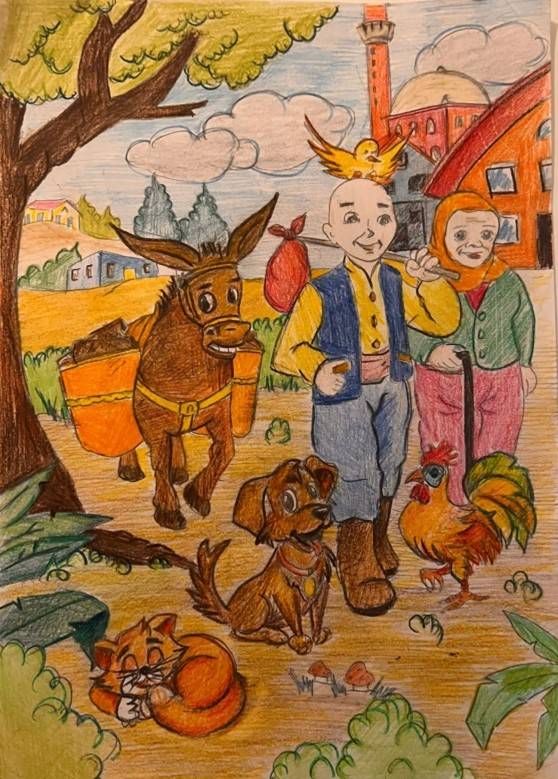

Ben Keloğlan… Anamın deyişiyle keleş oğlan, keltoş oğlan… Anadolu’da bana Keloğlan diye seslenirler. Yaşlı ve fakir anamla birlikte yaşarım. Boyum kısa, başım keldir; zayıf ve biraz da saf birisi olarak görürler beni. Başım kel, boyum kısa olabilir ama kocaman bir yüreğim vardır benim. Biraz da hayalperestim… Olmadık hayaller kurar, olmadık işlere kalkışırım. Zavallı annem hep üzülür benim boyumdan büyük işlere kalkışmamdan. Benimle ilgili pek çok öykü dinlemiş ya da okumuşsunuzdur. Kimi zaman padişahın zorlu sınavlardan geçmeyi gerektiren kızına talip olurum, kimi zaman da Kafdağı’nın devleriyle uğraşırım. Yolum, sık sık benim için-gerçi kimin için öyle değildir ki?- gücü, zenginliği ve iktidarı temsil eden padişahların yaşadıkları saraylara düşer. Oradan güç ve zenginlikle geri dönerim. Dediğim gibi, ucu saraylara çıkan yolculuklara çıkarım zaman zaman. Bütün zayıflığıma ve kel kafama rağmen hem iyilikseverim hem de kurnazımdır. İyilikseverliğim karınca, güvercin gibi hayvanların bile yardımıma koşmasına vesile olur. Hayvanlarla konuşurum, onlara zor durumlarında yardım ederim, onlar da bana yardım ederler başım dara düştüğünde ya da ihtiyacım olduğunda. Masallarım pek çok çocuğa hayvan sevgisini, iyilik yapma duygusunu aşılamıştır. Eğlenceliyimdir, güldürürüm insanları. Gülünç durumlardan kurnazca kurtulur, karşımdaki güçlü ve donanımlı rakiplerim de teslim eder aklımın ve kurnazlığımın hakkını. Tehlikeler karşısında daima zeki ve kurnazımdır. Hile yapana hile yapmaktan da kaçınmam. Nice çocuk sevinmiştir benim onca zayıflığıma ve donanımsızlığıma rağmen iyilikseverliğim, aklım ve kurnazlığım sayesinde başarıya ulaşmama. Tabii, arada şansım da yaver gitmiyor değil… Masallarımda ne kadar zayıf, yetersiz ve donanımsız olursanız olun, ne kadar zor durumda kalırsanız kalın iyi olmaktan, hayvanları sevmekten, mücadeleci bir ruha sahip olmaktan asla vazgeçmeyin derim. İyi olun, iyi ve güzel şeyler yapın. Unutmayın iyilik yapan iyilik bulur, er ya da geç başarılı olur, haksızlıkları ve adaletsizlikleri ortadan kaldırır. Bakın ne de güzel anlatıyor beni aşağıdaki şarkı. Hadi, hep birlikte söyleyelim:
- Ben bir garip Keloğlan’ım Eşeğimin yok palanı Varım yoğum doğruluktur Hiç de sevmem ben yalanı
- Bir kocakarı anam var Birkaç tavuk, bir de inek Her gün konar kel kafama Evsiz kalmış birkaç sinek
- Olmam kimseye kul köle Halkın kulağı diliyim Namertlere avuç açmam Sivri akıllı biriyim
- Keloğlanım budur özüm Haram malda yoktur gözüm Garip hakkını yiyene Elbet vardır bir çift sözüm
